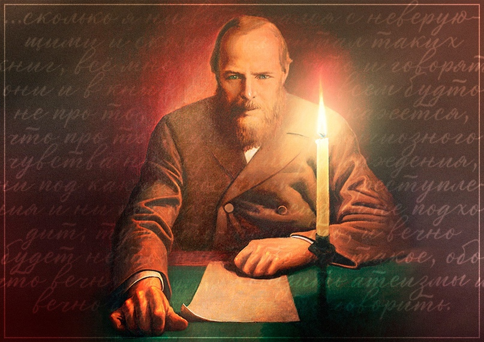

"Дневник писателя" 1876 года – это вторая часть цикла философско-публицистических размышлений Фёдора Михайловича Достоевского, написанных в форме дневниковых записей. Она является продолжением "Дневника писателя" 1873 года и представляет собой серию эссе, в которых Достоевский делится своими мыслями, переживаниями и наблюдениями о русской реальности того времени, но с еще более ярким акцентом на религиозных и этических вопросах.
"Дневник писателя" 1876 года не обладает традиционным сюжетом. Это сборник размышлений, в которых Достоевский глубоко погружается в религиозные вопросы, размышляя о смысле жизни, о духовном преображении человека, о роли религии в современном мире. Он часто обращается к образу Христа как символу любви и сострадания. Писатель анализирует человеческое состояние, его внутренний мир, с его противоречиями, страстями и стремлениями. Он размышляет о любви, о семье, о моральных ценностях, о смысле существования. Однако, Достоевский не забывает и о социальных проблемах. Он пишет о тяжелом положении простого народа, о необходимости помощи нуждающимся. В своих записях Достоевский часто обращается к реальным историям из жизни простых людей, показывая их жизнь во всех ее противоречиях и трагичности.
Голос народа: Достоевский продолжает быть "голосом народа", выступая в защиту простых людей и обличая несправедливость и бесправие, с которыми они сталкиваются.
Критик и философ: Достоевский — не только публицист, но и философ, размышляющий о смысле жизни, о человеческой душе, о добре и зле. Он пытается понять причины социальных проблем и найти путь к их решению.
Пророк и моралист: Достоевский — пророк, который видит опасности в будущем России и пытается предупредить о негативных тенденциях в обществе. Он выступает против бездуховности, безнравственности и отчуждения между людьми.
Жертва своих идей: Достоевский — жертва своих идей, потому что он не только критикует мир, но и ищет в нем справедливость, добро и духовное начало. Он страдает от неравенства и беззакония, которые он видит вокруг себя.
Психолог и аналитик: Достоевский — тонкий психолог, который анализирует поведение и мотивы людей, показывая их слабости и пороки.
